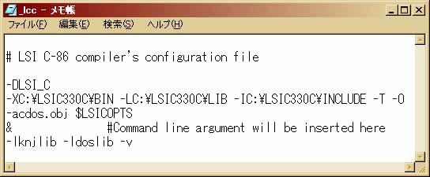

Ceta セットアップ手順書
２．コンパイラのインストール
コンパイラ(compiler)とは、人間に分かる言葉で書かれた命令手順書（プログラムソースコード）
をコンピュータに分かる言葉で書かれたもの（実行ファイル）に翻訳、編集(compile)
するためのソフトです。プログラミングをする上で不可欠なソフトで、種類も
様々です。人間に分かる言葉とはいえ英語、日本語、中国語等のようにそれらにも
いろいろな種類があります。現在主流とされているプログラミング「言語」としては、
１．主にパソコンで動くプログラム用・・・C/C++言語 JAVA Pascal BASIC
２．主にインターネットのホームページ用・・・C言語(CGI) JavaScript JAVA Perl
３．主に電子、機械制御のプログラム用・・・アセンブラ マシン語（機械語）
（順番に特に意味はありません。念のため。）
・・・などが挙げられます。２．のC言語(CGI)、JavaScriptに関してはコンパイル
が不要です。
恐らくCeta をお求めになられた方の殆どはこのうち、C/C++言語の学習を目的として
おられると思います。そこでこのセクションではフリーのコンパイラとして代表的な「LSIC-86」「Borland C++ Compiler」
の二つのコンパイラのインストールからコンパイラ側の設定に至るまでを説明します。
今回取り上げるコンパイラは・・・
Ａ．エル・エス・アイ ジャパンの「LSIC-86（試食版）」
Ｂ．ボーランドの「Borland C++ Compiler」
の二つです。なおLSIC-86（試食版）では「C言語」のコンパイルはできますが
「C++」はサポートされていません。また試食版ですので機能制限もあり、付属の
ドキュメントを読まれてからお使い下さい。
２−１Ａ．LSIC-86のインストール
２−２Ａ．LSIC-86の設定
２−１Ｂ．Borland C++ Compilerのインストール
２−２Ｂ．Borland C++ Compilerの設定
LSIC-86（試食版）は以下のホームページからダウンロードできます。
http://www.lsi-j.co.jp/
ダウンロードする際、ファイルを保存する場所を聞かれてくるので「デスクトップ」
を指定して下さい。ダウンロードが完了すると、デスクトップ画面にlsic330c.lzhという
アイコンが現れているはずです（Windowsロゴマークのアイコンで表示される場合も
ありますが、とりあえず問題はありません）。これがLSIC-86（試食版）の圧縮フ
ァイルです。１−１．+Lhaca(Lhasa)のインストールで+Lhacaはすでにインストールされている
はずですので、これから解凍を行います。
下のように（少し見辛いかもしれませんが）「lsic330c.lzh」をマウスでドラッグ
し、ドラッグするアイコンイメージが+Lhacaのアイコンと重なるようにします。
+Lhacaのアイコンが左のようになれば、マウスボタンを放します。自動的に
解凍が始まり、デスクトップ画面上に「lsic330c」のフォルダアイコンが現れます。
下は「lsic330c」のフォルダの内容です。コンパイルに最低限必要なファイル
一式が揃っています。Ceta インストールの時と同様に切り取り（又はコピー）
で好きな場所に移動して下さい。下の例ではシステムディスク（C:ドライブ）
の直下に移動しています。
厳重注意：決してWindowsをインストールしたドライブ（一般にC:）以外の
ドライブにコピーしないで下さい。正常にコンパイルができない可能性が
あります。作者は一時、Dドライブにコピーしましたが全てのディレクトリ設定
が正しいにも関わらずコンパイルが正常に終わりませんでした。
これでLSIC-86（試食版）のインストールは終わりました。しかし、まだコンパ
イルソフトとしての設定が残っています。コンパイルをするにはいろいろなフ
ォルダ設定やオプションを指定します。これをしっかりしておかないと動くも
のも動きません。これらの設定はLSIC-86の場合、「BIN」フォルダ内の「_LCC」
ファイルの中で記述するようになっています。
先ほどのインストールフォルダ（例で言うならC:¥lsic330c）内の「BIN」フォルダ
の中にある「_LCC (or _lcc)」を右クリックして下さい。出てきた右クリック
メニューの中から、「アプリケーションから開く」をクリックして下さい。
使用するアプリケーションとして「NOTEPAD」を選択し、「この種類の〜」
のチェックは必ず外した状態で「OK」ボタンをクリックします。
メモ帳が開かれ、初期設定として以下のテキスト文章が書かれているはずです。
これからこの中のフォルダ設定を、インストールしたフォルダに書き換えます。
「A:¥LSIC86」（左下を参照）の部分を書き換えます。今回の例では実際にファ
イル一式が存在しているのは「c:¥lsic330c」ですから、そのように書き換えます
（右下を参照）。オプションの意味については今は気にしなくても大丈夫です。
←これを こーする。
なお、フォルダの設定の際はDOS8.3形式のファイル名について(LSIC-86)
を必ず参照して下さい。
他のオプション（-L, -I）についても、-X と同様に書き換えます。最終的に
今回の例では以下のように書き換えます。フォルダの指定にミスがないのを確認
してから上書き保存して下さい。
LSIC-86をc:¥lsic330cにインストールしたときの設定例

これでLSIC-86（試食版）のコンパイラ側の設定が終わりました。続いてCeta の
「コマンド」メニューにLSIC-86のコンパイルコマンド「LCC.EXE」を登録します。
３−１Ａ．LSIC-86のコマンドメニューへの登録へ進む
（すでにBorland C++ Builder をインストールしてある方は、以下の２−１Ｂ．２−２Ｂ．
の作業は必要有りません。そのまま
３−１Ｂ．Borland C++ Compilerのコマンドメニューへの登録
へ進んで下さい。）
Borland C++ Compiler は以下のホームページからダウンロードできます。
http://www.borland.co.jp/cppbuilder/freecompiler/index.html
ダウンロードする際、ファイルを保存する場所を聞かれてくるので「デスクトップ」
を指定して下さい。ダウンロードが完了すると、デスクトップ画面に下のような
アイコンが現れているはずです。ダブルクリックするとインストールが始まります。
まず下のような画面が出て使用の際の契約の確認をします。一通り確認した後、
「同意する」ボタンをクリックします。
インストールディレクトリを設定します。今回の例では（下）、デフォルト設定
のままインストールを続行します。
フォルダを作成します。「はい」ボタンをクリックします。
ファイルの展開が終了し、セットアッププログラムが終了すると下のエクスプローラ画面
にしめしたようなフォルダが作られているはずです。
以上で Borland C++ Compilerのインストールは終わりです。しかし、まだコンパ
イルソフトとしての設定が残っています。コンパイルをするにはいろいろなフ
ォルダ設定やオプションを指定します。これをしっかりしておかないと動くも
のも動きません。これらの設定はBorland C++ Compilerの場合、「BIN」フォルダ
内の「bcc32.cfg」「ilink32.cfg」ファイルの中で記述するようになっています。
インストールしたフォルダ（今回の例では「c:¥borland¥bcc55」）の中の「readme.txt」
にインストール後の設定手順が書かれています（下）。このうち、Ceta を利用する場合
「a. 既存の〜」の作業は必要有りません。bcc32.cfgとilink32.cfgを作成すれば
Borland C++ Compilerのインストール作業はひとまず完了です。
というわけで、メモ帳などを使って以下の二つの設定ファイルを作り、bcc32.exe
と同じ場所に保存して下さい。
c:¥borland¥bcc55にインストールしたときの設定例
注意：NOTEPAD（メモ帳）で「名前を付けて保存」するとき、「ファイルの種類」がデフォルトでは「テキスト
文書」になっています。この状態で「bcc32.cfg」と保存すると勝手に「.txt」がくっつけられてしまいます。
これを回避するには、「ファイルの種類」で「すべてのファイル(*.*)」を選びあらためて「bcc32.cfg」で
保存して下さい。或いは「bcc32.cfg.txt」で保存された後名前を変更して.txtを削るのも一つの方法です。
これでBorland C++ Compiler のインストール及び設定は終了です。
お疲れさまでした。続いてCeta の「コマンド」メニューにBorland C++ Compiler の
コンパイルコマンド「BCC32.EXE」を登録します。
３−１Ｂ．Borland C++ Compilerのコマンドメニューへの登録へ進む
３．Ceta の各種設定へ進む